|
Chung-Pang Wang I am a PhD student in the Riviere Robot Lab at New York University (NYU), advised by Prof. Benjamin Riviere. I completed my M.S. in ECE at UC San Diego, where I worked with Prof. Michael Yip in Advanced Robotics and Controls Lab (ARCLab). Prior to coming to UC San Diego, I completed my Bachelor’s degree in Mechanical and Electro-Mechanical Engineering (MEM) at National Sun Yat-sen University (NSYSU), advised by Prof. Chen-Wen Yen and Prof. Keng-Hao Liu. ResearchMy research focuses on adaptive control and planning methods for robotic manipulation in complex environments, such as deformable surgical sites and free-flying space systems, emphasizing physics simulation modeling, data-efficient learning, and test-time adaptation. |

Selected Publications† indicates equal contribution. |
|
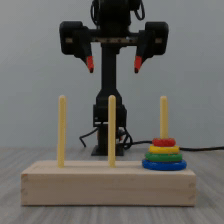 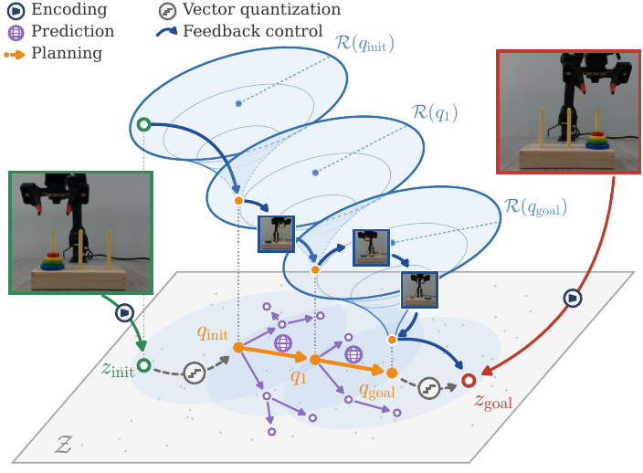 |
Vector-Quantized World Model: Latent Feedback Motion Planning for Robot Manipulation
Xuezhou Xu†, Chung-Pang Wang†, Zhenzhen Li, Benjamin Riviere Under submission, 2026 arXiv We propose a vector-quantized world model (VQ-WM) that pairs a discrete latent predictor for long-horizon search with a continuous visual-feedback controller for robot manipulation. |

|
Feedback Matters: Augmenting Autonomous Dissection with Visual and Topological Feedback
Chung-Pang Wang†, Changwei Chen†, Xiao Liang, Soofiyan Atar, Florian Richter, Michael Yip IEEE International Conference on Robotics and Automation (ICRA), 2026 arXiv We propose a framework to augment autonomous dissection with visual and topological feedback. |

|
MEDiC: Autonomous Surgical Robotic Assistance to Maximizing Exposure for Dissection and Cautery
Xiao Liang†, Chung-Pang Wang†, Nikhil Uday Shinde, Fei Liu, Florian Richter, Michael Yip IEEE International Conference on Robotics and Automation (ICRA), 2025 Best ICRA 2025 ELSR Workshop Paper Award Finalist (2/39) Video / arXiv We propose a framework for autonomous surgical robotic assistance that integrates a differentiable physics model with perceptual feedback. |
Projects |
|
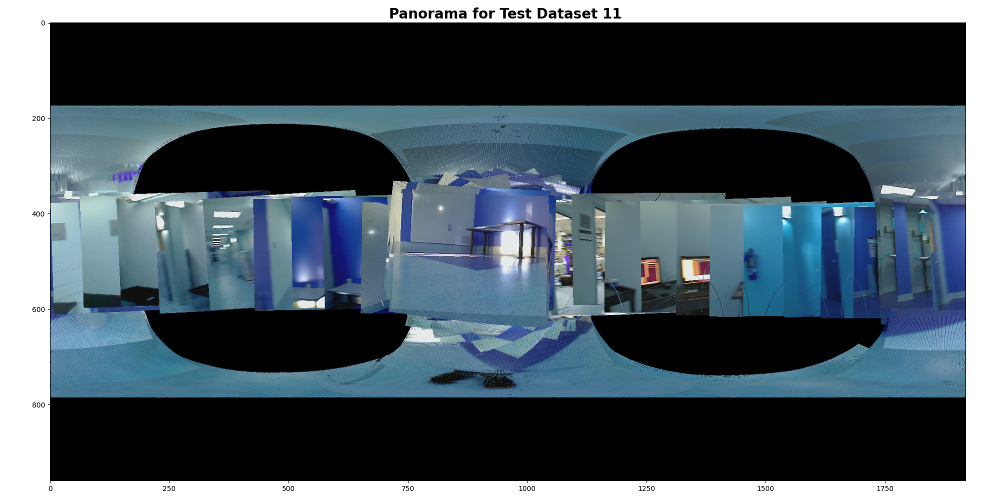 |
Orientation Tracking with Quaternion Optimization
University of California, San Diego, 2024 project report / code
Tracking camera orientation with IMU data.
Formulated an optimization problem with quaternions and use gradient descent algorithm (GD) to find optimal orientation sequences.
Subsequently, I utilize the optimal orientation to construct panoramic images by stitching images over time. |
|
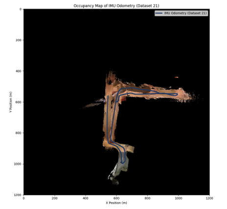 |
LiDAR-Based SLAM
University of California, San Diego, 2024 project report / code
Implemented a lidar-based SLAM algorithm on a differential-drive robot by integrating multiple sensor inputs—wheel encoder and IMU odometry, 2-D LiDAR scans, and RGBD imagery.
The robot’s position and orientation are estimated using odometry and LiDAR measurements, enabling the construction of a 2-D occupancy grid map that captures both free and occupied areas of the environment.
Additionally, color information from the RGBD sensor is used to enrich the map, assigning realistic floor colors to the 2-D representation. |
|
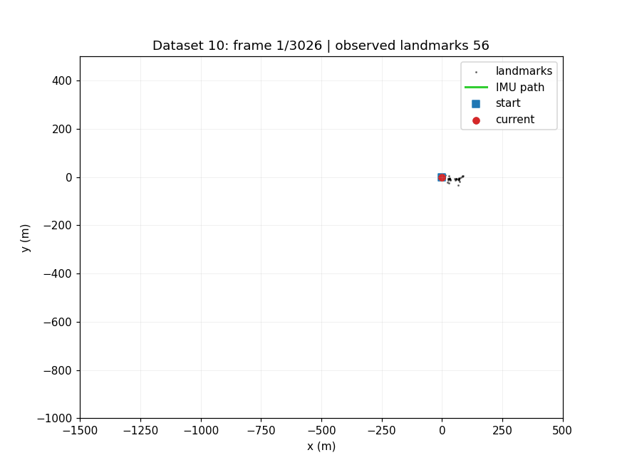 |
Visual-Inertial SLAM using EKF
University of California, San Diego, 2024 project report / code
Visual-Inertial SLAM using an Extended Kalman Filter (EKF).
SLAM fuses data from an inertial measurement unit (IMU) and a stereo camera pair to accurately track the vehicle’s trajectory while simultaneously reconstructing a sparse 3D map of the environment.
By combining the IMU’s motion predictions with stereo camera observations of visual landmarks,
the EKF continuously refines estimates of both the vehicle’s pose and the map’s structure. |
|
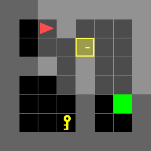 |
Dynamic Programming
University of California, San Diego, 2024 project report / code
Formulate Door & Key problem as a Deterministic Shortest Path problem (DSP) and
solve it with Dynamic Programming algorithm by minimizing the cost of reaching the goal. |
|
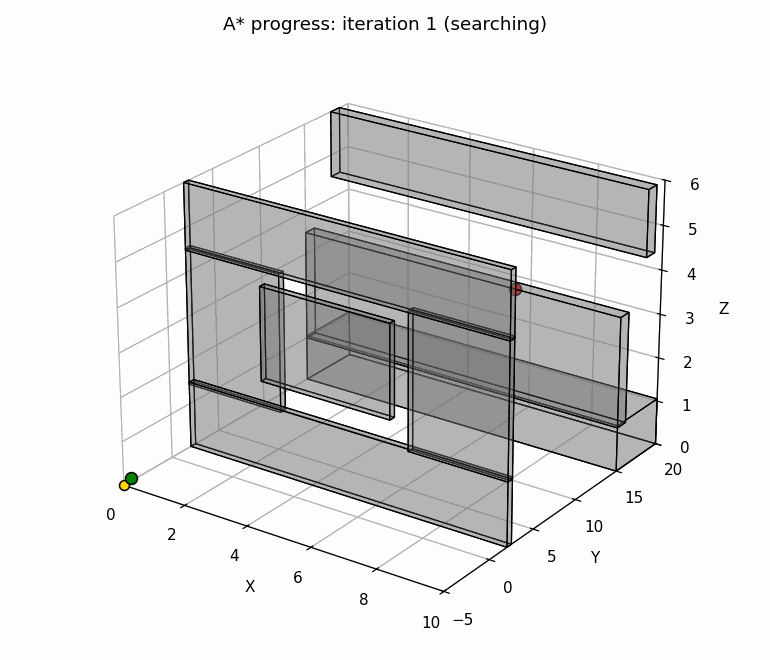 |
Motion Planning
University of California, San Diego, 2024 project report / code
Implemented search-based (A*) and sampling-based motion planning (RRT, RRT*, Bi-directional RRT) algorithms in 3-D Euclidean space.
Test both search-based and sampling-based motion planning algorithms in 7 different environments with axis-aligned bounding boxes (AABBs) obstacles. |
|
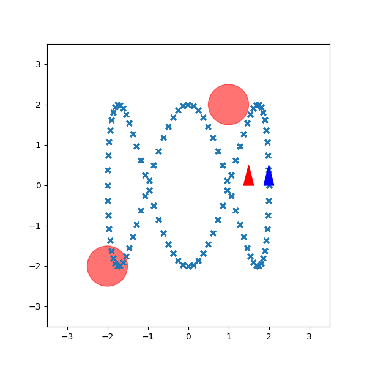 |
Infinite-Horizon Stochastic Optimal Control
University of California, San Diego, 2024 code
Developed a safe trajectory tracking algorithm for a ground differential-drive robot by formulating a discounted infinite-horizon stochastic optimal control problem.
Solved the problem using both certainty equivalent control (CEC) and generalized policy iteration (GPI). |
|
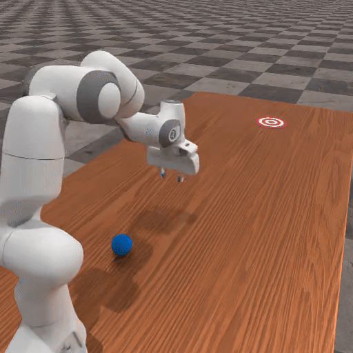 |
Learning Robotic Pool-Playing Skills via PPO
University of California, San Diego, 2024
Designed and built a Panda robot billiards environment in ManiSkill, and trained a state-based reinforcement learning agent with PPO. |

|
Online Real-to-Sim Residual Learning for Deformable Object Manipulation
University of California, San Diego, 2024
Employed Graph Neural Networks (GNNs) to capture the positional residuals between the XPBD simulation and the observed real soft-body.
The learned residual model predicts the positional residuals and compensate the sim-to-real gap, enabling more accurate state estimations of future deformations. Green points are the real point cloud of a thin-shell. The grey mesh is the XPBD simulation compensate with learned residual.
|
|
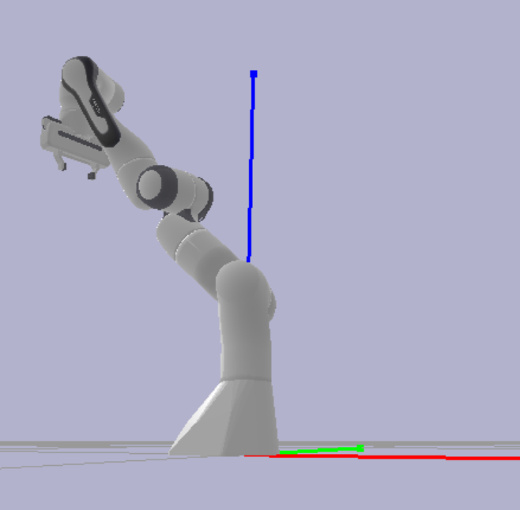 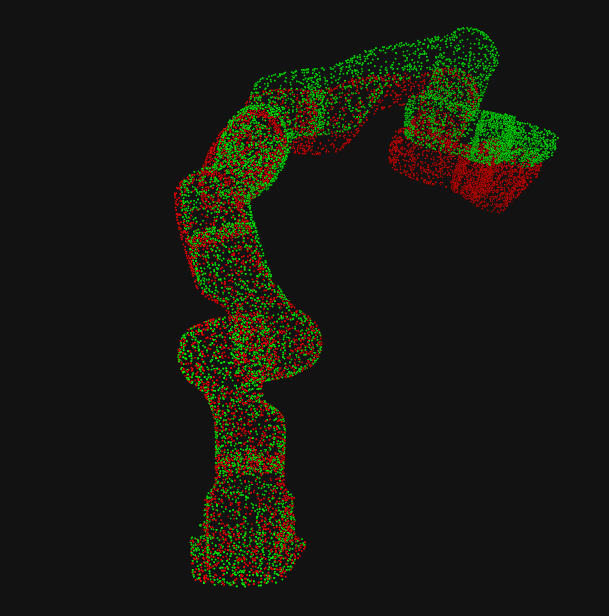 |
Data-Efficient Pose Estimation of Robotic Manipulators via SE(3)-Equivariant Neural Networks
University of California, San Diego, 2023
Trained a part-based SE(3)-equivariant neural network, to estimate Panda Arm’s pose from point cloud inputs.
Aimed to enable data-efficient transfer of motion tasks between robotic arms.
|
|
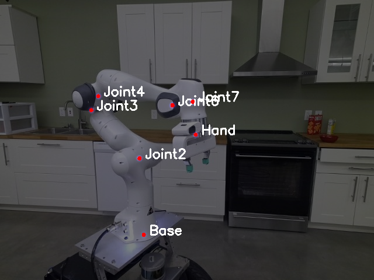 |
Enhancing Keypoint Detection with Attention Mechanism
University of California, San Diego, 2024 project report / code
Enhanced keypoint detection by integrating attention mechanisms into a VGG19-based encoder-decoder network.
Our method improves camera-to-robot transformation estimation from single images.
|
|
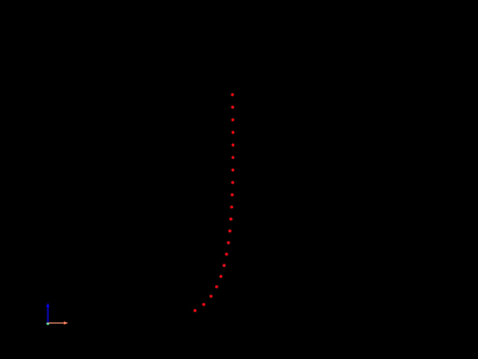 |
Physics Simulation of a Rope Using XPBD
University of California, San Diego, 2024 code
Simulated a swinging rope using Extended Position-Based Dynamics (XPBD) with distance constraints, ensuring stable, realistic motion through constraint-compliant updates.
|

|
Visual hazard detection system for cyclist safety
National Sun Yat-sen University, 2021 code
A Visual hazard detection system for cyclist safety.
Integrated Yolov4-tiny and DeepSort to track vehicles behind and predict potential hazards for cyclists. |
|
Forked from Jon Barron's public academic website |